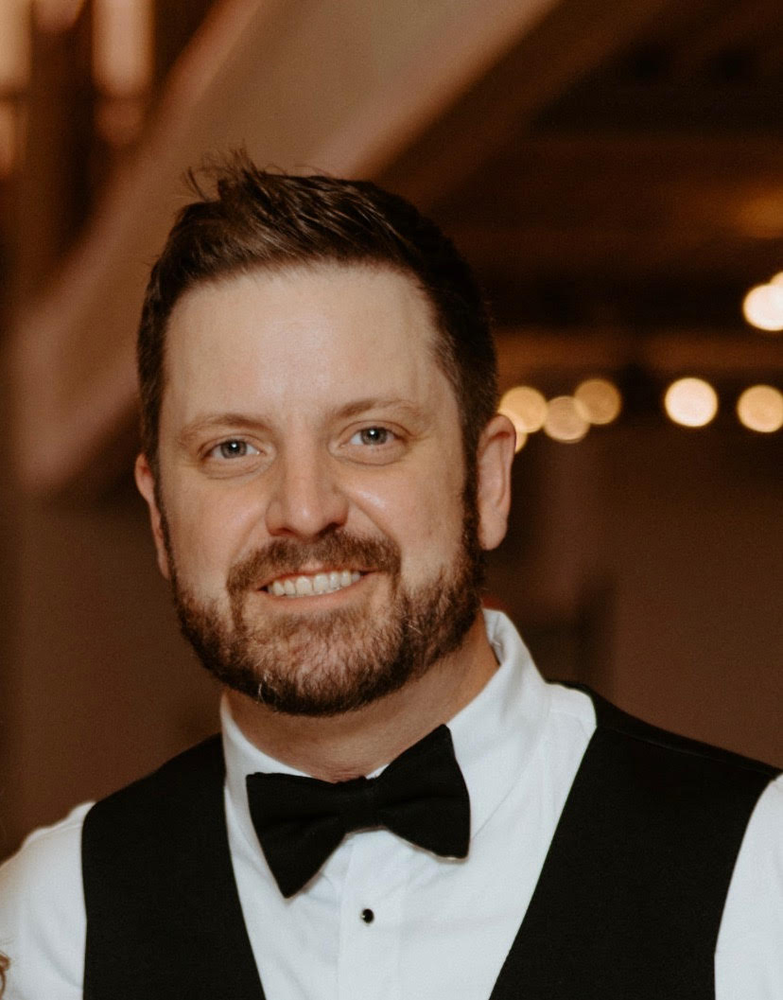

Alex Weiler

Objective
To obtain a full-time position in the field of software engineering
Education
Wayne State University, Mike Ilitch School of Business
Bachelor of Science in Business Administration
Major: Technology, Information Systems and Analytics
Detroit, MI
Anticipated Graduation: December, 2024
Delta College
Associate of Arts
Bay City, MI
Graduated: December, 2023
Per Scholas
Certificate of Completion in Software Engineering
Completed full-stack software engineering boot camp with over 600 hours of hands-on coding. Experiences include:
- Test, debug, and present on several web applications including interactive games, tip calculator, restaurant page, and e-commerce store
- Collaborate with students on projects and establish a project workflow using GitHub
Attended: March 2022 - July 2022
Experience
Little Caesar's Enterprises
February 2023 - Present
Digital Operations Engineer
Responsibilities include:
- Identify and resolve issues including issues raised from Level 2 customer support, customers, and issues identified within the operations team
- Responsible for online ordering configuration for all new restaurant openings and ownership transfers worldwide
- Execute day-to-day application maintenance and processing including planning upcoming feature rollouts, assisting Tier 1 and Tier 2 Help Desk tickets to field and answer software and application questions, and work with Software Developers to investigate and solve software bugs or engineering misses
- Daily collaboration with other teams within the organization including fraud, legal, marketing, and management for all departments to ensure successful operations for restaurant owners and franchisees
- Daily querying in Microsoft SQL Server
Technical Skills
Languages:
- JavaScript
- HTML
- CSS
- SQL
- Python
Frameworks, Libraries, and Tools:
- React.js
- Node.js
- Express.js
- Git
- Mongo DB
- Oracle SQL
- Microsoft SQL Server
- Visual Studio
Relevant Coursework
Delta College
- Database Management Systems
- UNIX/Linux
- Intro to Programming (Python)
- Game Development (Python)
Wayne State University
- Statistics: Quantitative Methods II
- Intro to Business Analytics
- Programming in R